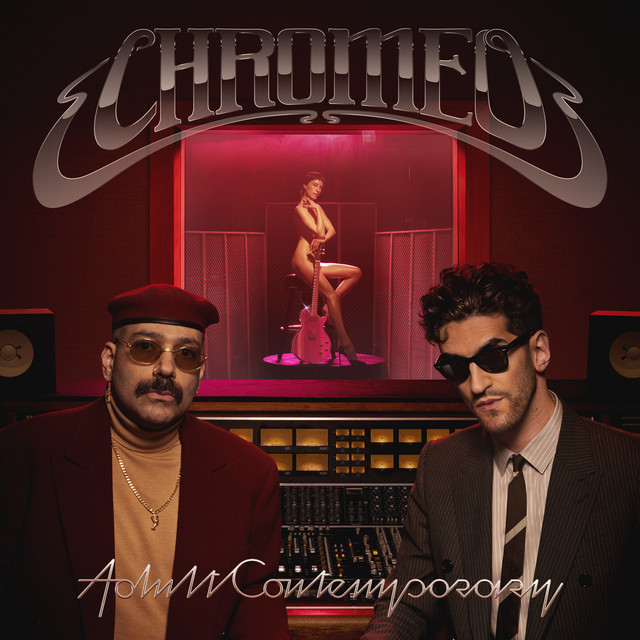

Chromeo - Adult Contemporary



Información del álbum facilitada por discogs.com:
Fecha de lanzamiento: 2024
Géneros: Electronic, Rock, Funk / Soul, Pop
Estilos: Funk
Pais: Europe
Votos: Media de 5.0 con 1 votos
Sello: Mercury
Phonographic Copyright (p): Phonogram GmbH
Photography By - Markus Amon
Producer - Glen P. Stone
Producer - Tex Taylor
Tracklist:
(I Don’t Need A) New Girl
Got it Good
Lost And Found
BTS
Replacements Feat. La Roux
Lonesome Nights
Personal Effects
She Knows It (Personal Effects PT. 2)
Ballad Of The Insommniacs
Coda
Words With You
A Cut Above
Friendsnlovers
Two Of Us ( Friendsnlovers PT. 2)